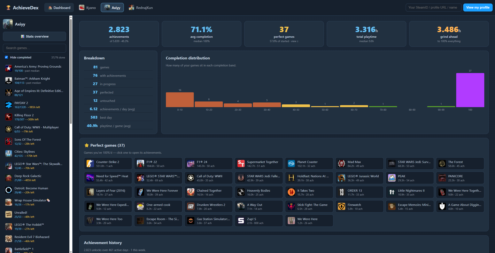

Web DevelopmentAI & AutomatisatieContent CreationJavaScriptC#FirebaseSharePointOdoo
Web DevelopmentAI & AutomatisatieContent CreationJavaScriptC#FirebaseSharePointOdoo
01
Over Mij
Ik ben Kyano, jaar oud en afgestudeerd in het Graduaat Programmeren aan Howest Brugge.
Ik bouw webapplicaties, automatiseer workflows met AI, en richt systemen (ERP, Odoo, SharePoint) in
voor klanten. Van websites en webshops tot chatbots, dashboards en systeemkoppelingen: ik werk het
liefst aan projecten waar ik iets van nul kan opbouwen of écht impact heb voor de klant.
Naast programmeren hou ik me ook bezig met content creatie, fitness en alles wat met technologie te maken heeft.
Open voor werkFreelance-opdrachten en vaste functies
Graduaat in het ProgrammerenHowest Brugge · 2026
Web Development
AI & Automatisatie
Content Creation
02
Mijn Skills
Programmeertalen en tools die ik beheers
Programmeertalen
JavaScript
Frontend-interactiviteit en logica voor zowat elk webproject.
HTML / CSS
De basis van elke website die ik bouw.
C#
Voornamelijk gebruikt in Blazor-projecten zoals Burrow.
Python
Scripting en automatisatie, o.a. voor de productimport bij Cittel.
Dagelijks gebruik, van cloud-modellen tot lokale LLMs via Ollama en LM Studio.
Visual Studio (Code)
Jarenlange ervaring, van simpele websites tot complexe back-ends.
WordPress
CMS waarmee ik de webshop van Cittel bouwde, incl. WooCommerce en custom plugins.
Topaz Photo & Video AI
Foto's en video's opschalen, denoisen en verscherpen met AI.
Git
Versiebeheer voor code-wijzigingen en samenwerken met andere developers.
GitHub
Platform voor mijn repositories; 90% van mijn projecten staat hier.
Node.js
Server-side JavaScript voor backend-applicaties en tooling.
SharePoint
Bedrijfsomgevingen en documentbeheer opzetten en beheren.
API's
Zowel bouwen als integreren in projecten.
Figma
Wireframes, mockups en prototypes voor web- en mobiele apps.
Vite.js
Snelle frontend build tool met instant hot reload.
Blazor (Hybrid)
Frontend framework voor web- en mobiele apps in C#.
Notion
Note-taking en projectmanagement dat ik dagelijks gebruik.
SendGrid
Transactionele en geautomatiseerde mails versturen via API.
Web3Forms
Contactformulieren rechtstreeks naar e-mail sturen, zonder backend.
CapCut
Video editing voor content bij verschillende projecten.
Paint.NET
Beeldbewerking voor UI-design en grafisch werk.
03
Werkervaring bij Cittel
Stage & studentenjob · Web development, SharePoint & IT-support
Stage en studentenjob bij Cittel, een Telenet-centrum
dat zich daarnaast ook specialiseert in de verkoop van toestellen en B2B-dienstverlening. Tijdens mijn stage lag de
focus op de website en webshop. Tijdens mijn studentenjob ging het vooral om het inrichten van SharePoint-omgevingen
voor klanten, meehelpen met het instellen van toestellen, en het opsporen en oplossen van problemen bij uiteenlopende
toestellen.
Bedrijfswebsite:cittel.be van nul opgebouwd, modern design en snelle laadtijden.
Webshop: WordPress met custom plugins en automatische productsync vanuit de leverancier.
Bekijk hoe het werkt
Odoo-koppeling: webshop verbonden met Odoo, zodat klanten en facturen automatisch werden aangemaakt.
SharePoint: omgevingen ingericht en beheerd voor klanten.
Toestellen: meehelpen met instellen, en problemen opsporen en oplossen bij klanten.
04
Mijn Projecten
Een selectie van mijn werk en schoolprojecten

01
AchieveDex
Dashboard om Steam-achievements bij te houden per profiel: voortgang, perfecte games en
completion-statistieken. Live op sam.kyanodm.be.
Burrow is een buurtcommunity-app die bewoners van woonwijken en appartementsgebouwen digitaal met elkaar
verbindt. Het platform is gebouwd rond drie pijlers: sociale cohesie, duurzaamheid en efficiëntie. Veel buren
kennen elkaar nauwelijks, communiceren via versnipperde WhatsApp-groepen en verspillen spullen die anderen goed
kunnen gebruiken. Burrow lost dit op met één gecentraliseerd platform.
Technisch bestaat de applicatie uit een Blazor Hybrid frontend gebouwd op .NET MAUI, gekoppeld aan een .NET Web
API via een REST API. De gedeelde business logic en entiteiten leven in een apart Core-project. Realtime
communicatie verloopt via Firestore, authenticatie via Firebase Authentication gecombineerd met JWT-tokens.
De kernfunctionaliteiten omvatten: communities met gelaagd lidmaatschap en moderatierollen, een buurtfeed met
posts en likes, privéchat en community-chatrooms, een evenementenmodule met datumprikker en benodigdhedenlijst,
een lokale marketplace voor verkoop en weggeven, een interactieve kaart met privacybeheer, en push-notificaties
via Firebase Cloud Messaging.